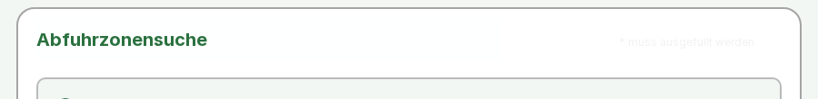

Basel-Stadt: Ring 1 – sieben Kernseiten (Nachtrag)
Privater Arbeitsbericht, Stand 29.10.2026. Vom Eigentümer freigegebener, gleich begrenzter Lauf wie #53 (nur www.bs.ch). Code 620e2327, 7 Seiten, 132.3 s. Keine Veröffentlichung, keine Konformitätsaussage.
nur www.bs.chkein Login, keine FormulareProduktions-Scanner + sichere Journeyskeine ModellaufrufeMistral unverändert 0,073 von 5 USD
Kurz: Alle 14 Läufe (7 Seiten × Scanner und Journeys) endeten ohne Abbruch. Auf den sieben Seiten tauchen keine neuen seitenspezifischen Kandidaten auf: alle Signale stammen von den gemeinsamen Komponenten des Webauftritts, die schon im #53-Lauf auffielen (Suchfeld, Hauptbereich, Regionen). Der Nachtest der Abfallzonen-Suche bestätigt die #53-Beobachtung: Der Pflichtfeld-Hinweis wird weiterhin mit dunkelstem Grauwert 242 dargestellt (≈1.12:1). Für die übrigen Seiten waren keine Nachspiel-Aufrufe nötig.
Zum vollständigen Kontext: Feldbericht #53 · Discovery-Landkarte
Alle Anfragen
| Schritt | Seitenaufrufe | Beleg |
|---|---|---|
| Ring-1-Lauf: Scanner + Journeys auf 7 Seiten (10 s Abstand, keine Wiederholung) | 14 | batch/run-manifest.json |
| Nachspielen im frischen Browser | 0 | nicht nötig: keine neuen Kandidaten; Nachtest aus dem Scanner-Bildschirmfoto gemessen |
| Summe | 14 |
Geprüfte Seiten
axe «verletzt» ist ein automatisches Signal im Forschungsprofil, kein WCAG-Urteil; «unvollständig» braucht menschliche Prüfung. Journeys: Fokusverlauf, aufklappbare Elemente, Dialog öffnen + Escape, Sprunglink.
| Seite | Aufgabe | Läufe | axe verletzt / unvollständig / bestanden / nicht anwendbar | Journeys bestanden / zu prüfen / nicht anwendbar |
|---|---|---|---|---|
| r01 | Gemeindedienste von Bettingen auf dem Kantonsauftritt – ande | scan: ok · journey: ok | 3 / 1 / 45 / 43 | 1 / 3 / 0 |
| r02 | Einbürgerung: wichtige Bürgeraufgabe mit Bürgergemeinde-Bezu | scan: ok · journey: ok | 3 / 1 / 44 / 44 | 1 / 3 / 0 |
| r03 | Judikative auf dem Kantonsauftritt | scan: ok · journey: ok | 3 / 1 / 44 / 44 | 1 / 3 / 0 |
| r04-s05 | Abmeldung | scan: ok · journey: ok | 3 / 1 / 44 / 44 | 1 / 3 / 0 |
| r05-s13 | Leistungen finden | scan: ok · journey: ok | 3 / 1 / 43 / 44 | 1 / 3 / 0 |
| r06-s23 | Informationen in Gebärdensprache | scan: ok · journey: ok | 2 / 1 / 46 / 42 | 1 / 3 / 0 |
| r07-s09 | Abfuhrzone zur Adresse | scan: ok · journey: ok | 4 / 1 / 43 / 45 | 1 / 3 / 0 |
Wiederkehrende Komponenten (einmal gezählt, alle Fundstellen behalten): axe.landmark-main-is-top-level an main auf 7 von 7 Seiten; axe.aria-allowed-attr an #searchinput auf 6 von 7 Seiten; axe.region an .mb-30 auf 5 von 7 Seiten; axe.region an #search-privacy-hint auf 5 von 7 Seiten; axe.region an .bk-main-canvas > div > h1 auf 4 von 7 Seiten; axe.region an .h-\[250px\] > h3 auf 4 von 7 Seiten. Seitenspezifisch nur auf der Abfallzonen-Suche: axe.color-contrast, axe.empty-heading, axe.heading-order; eine zusätzliche Region-Fundstelle (h3) auf r02 gehört zur gleichen «Nicht fündig geworden?»-Komponente. Keine Gesamtnote, keine Rangliste.
Nachtest: Pflichtfeld-Hinweis der Abfallzonen-Suche

Ausschnitt 160x20+950+382: dunkelster Grauwert 242 auf 255 → 1.12:1 #53 (frischer Browser, nach 1 s und 5 s): Grauwert 242 → 1,12:1 axe im Ring-1-Lauf: color-contrast «verletzt» am selben Element (berechnet ≈4,47:1)
Die Beobachtung bleibt bestehen; die mögliche Ursache (halbtransparente klebende Überschrift mit bg-white/90) bleibt eine Hypothese ohne Layoutmessung. Ein zweiter Lauf am selben Abend ist kein Nachweis über die Zeit.
Negativbefunde und Grenzen
- Fokus-Journey: 2/3 bzw. 4/5 Ziele mit «deutlich erkennbarer» Markierung. Im #53-Lauf erwies sich dieses Signal als Fehlalarm (Hintergrundmarkierung, Messung ausserhalb des Bildausschnitts); hier nicht erneut nachgespielt und daher nicht als Befund gewertet.
- Dialog-Journey überall «zu prüfen» (Sprachwahl, wie in #53); Sprunglink-Ziel vorhanden, Umgehungswirkung nicht automatisch beurteilbar.
- Gebärdensprache-Seite: Videoinhalte wurden nicht geprüft (Basel nennt Videos selbst als Einschränkung).
- Bettingen-Dienste und Wegzug: nur die öffentlichen Einstiegsseiten; Formulare und eServices bleiben ungeprüft.
- Keine Hilfsmittel-Erfahrung, keine Beteiligung von Menschen mit Behinderungen; Stichprobe nach Aufgabe gewählt, nicht zufällig.
Nächster Schritt
Die Ring-1-Freigabe ist mit diesem Lauf aufgebraucht. Die zwei reproduzierten #53-Beobachtungen bleiben die belastbaren Fälle für eine private Arbeitsnotiz an die Webredaktion (nach Freigabe). Über Ring 2 (sechs Startseiten anderer Träger) entscheidet der Eigentümer separat.
Erzeugt mit scripts/basel_ring1_report.py. Rohdaten ausserhalb von git; Prüfsumme in ARCHIVE.sha256.